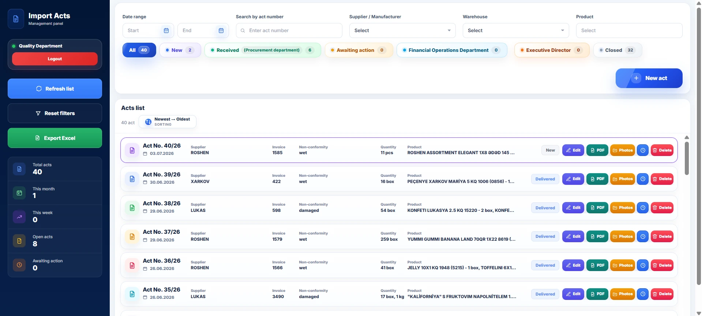
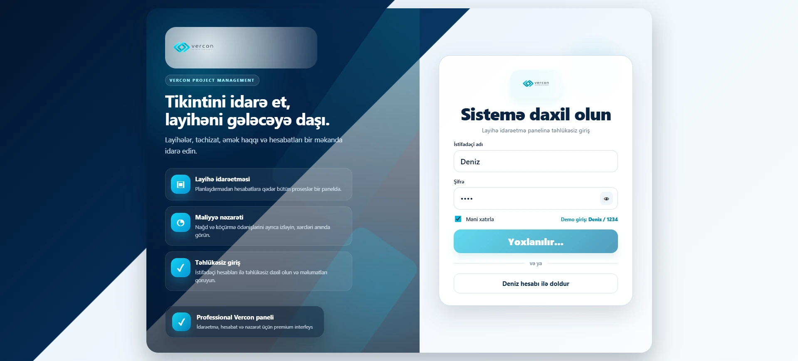
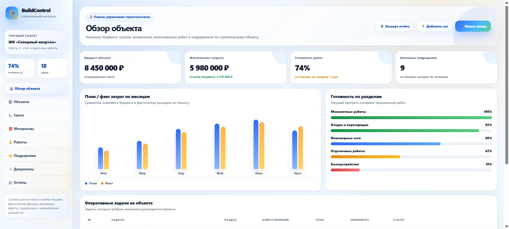
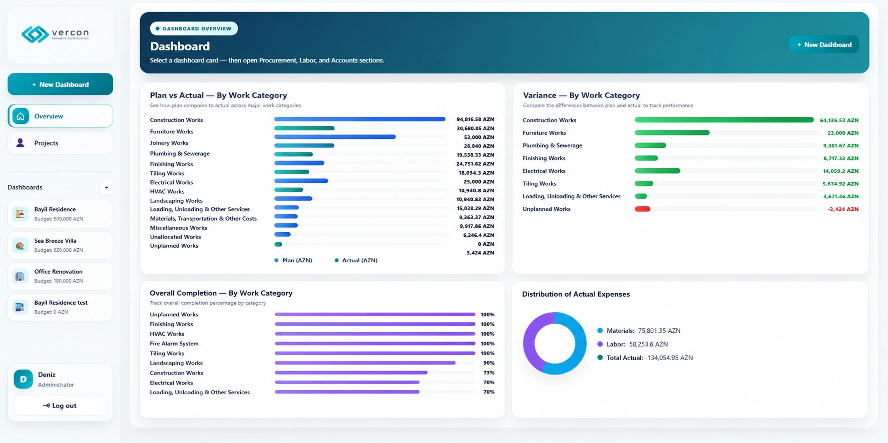
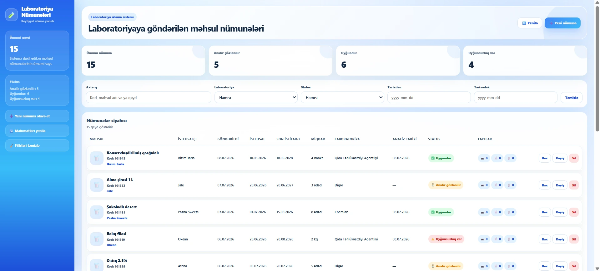

Apps Script web apps
Internal systems with forms, users, roles, statuses, approval flows and Google Workspace integration.
I build practical automation for business operations: Google Apps Script systems, spreadsheet workflows, PDF documents, Excel reports, dashboards, Telegram bots and Kotlin business applications.
Forms, spreadsheets, files, documents and analytics connected into one controlled process.
Solutions are designed around the actual process: who enters data, who approves it, where files are stored and what management needs to see.
Internal systems with forms, users, roles, statuses, approval flows and Google Workspace integration.
Structured databases, formulas, imports, exports, dashboards and management-ready reports.
Automatic acts, templates, previews, attachments, signatures, timestamps and Drive archives.
Telegram bots, Android/Kotlin business applications and practical tools for internal office workflows.
A role-based business web application that digitizes quality incidents for incoming goods — from registration and evidence collection to departmental approvals, PDF documents and final reporting.
Replace scattered Word files, manual approvals and separate spreadsheets with one traceable workflow.
Faster act creation, consistent document formatting, clear responsibility by department and a complete audit trail.
Separate interfaces and actions for Quality, Procurement, Finance and management approvals.
Search, filters, status groups and quick actions for every non-conformity record.
Product lines, issue reasons, vehicle and seal photos, attachments and live PDF preview.
Status history, comments, timestamps, closing workflow and Excel exports.

Central register with filters, status groups, department workflow and quick actions.
A construction management platform for project budgets, estimates, material and labor costs, Excel-based data exchange and planned-versus-actual analytics.
Give managers one place to control project budgets, detailed estimates, actual costs and remaining balances.
Immediate visibility into overspending, cost structure, project progress and the gap between planned and actual expenses.
Project cards with budgets, dates, status, spent amount and remaining balance.
Excel sheet import, structured sections, formulas and editable estimate rows.
Planned and actual material, labor and total values with variance calculation.
Category charts, project KPIs, planned-versus-actual comparison and Excel workbooks.

Secure sign-in with a concise overview of the platform's main capabilities.
A portfolio construction-management concept that connects project overview, budgets, materials, work stages, contractors, documents and management reports in one interface.
Demonstrate how a construction company can control operational information without switching between disconnected spreadsheets and files.
A clearer view of project progress, cost commitments, material supply, contractor performance and document readiness.
Construction objects with budget, progress, dates, responsible teams and current status.
Estimate control, committed costs, material purchases and delivery status.
Kanban-style work stages, deadlines, priorities and responsible contractors.
Project documents, approvals, KPI summaries and management-ready reporting.

Budget, actual spending, progress, deadlines and current project activity in one screen.
A clean clinic management platform that combines patient records, pet owners, appointments, warehouse control and operational reporting in a single interface.
Organize daily veterinary work and keep clinical, customer and inventory information connected.
Fewer missed appointments, faster access to patient history and better control of medicines, supplies and clinic workload.
Animal profiles with species, breed, owner, medical information and current status.
Customer contacts, linked pets, balances and communication details.
Scheduling, status tracking and a visual workflow for clinic visits.
Inventory stock, low-balance indicators, operational KPIs and printable reports.

Daily overview with quick actions, clinic metrics and featured patient information.
A sample tracking application for products sent to external laboratories, with deadlines, result statuses, product information, analysis files and handover documentation.
Create a reliable register for every sample from dispatch to the final laboratory result.
Clear deadlines, fewer lost files, quick access to sample records and an accurate view of pending or completed analyses.
Product, manufacturer, dates, quantity, laboratory and result status in one table.
Counters and filters for pending, completed and overdue laboratory analyses.
Structured create form with validation, laboratory selection and attachment blocks.
Full product and result information with notes, files and record timestamps.

Counters, filters and a detailed register of products submitted for laboratory analysis.
I can help with Google Apps Script, Google Sheets, Excel, PDF generation, internal dashboards, Telegram bots, Kotlin business apps and business web applications.